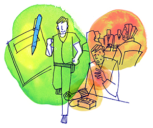

病気不安症（普通神経質）3
私の大きな勘違いに気づかせてくれた神経質講義
（普通神経症、パニック障害、抑うつ神経症）
山口 裕也（仮名）40代・会社員（体験フォーラム会員）
身体のあちこちに異常を感じる
私は5人兄弟の長男として生まれ小さい頃からわがままで、自分の興味のある事にはとても熱心なのですが、少しでも価値観が違ったり興味の薄い事なんかに対していつも知らぬ顔をしてきました。小学生の頃は人見知りで近所の人達ともあまり眼をあわせないようにと、コソコソ歩いていた事を覚えています。人の輪の中に入るのが苦手。皆と一緒に行動するのが苦手。友達とは2人以上で遊ぶと私だけが仲間外れのようになるので、いつも遊ぶなら2人と決めたりと、ちょっと変わった子だったのかも知れません…(汗)
そして、私は今から思うと、若い頃から身体のあちこちが異常に感じ、病院ばかりに行っていました。症状としてはどうしても逃げ出せない場所(歯医者・電車の中・会議中)にいるとき、突然緊張してきて身体が熱くなり、大汗を大量にかくのです。それは真冬だろうが関係なく、「ココで汗なんかかいたら皆に笑われてしまう。汗をかいてしまってもこの場所からは逃げられないから皆に馬鹿にされるのでないか…」、こんな感情が出だして、とてつもない緊張感で大汗をかいていました。
この症状はいつしかなくなり、いったいどうしたのだろうと思っていた矢先に、今度は喉の異常でした。唾を飲み込むだけで痛い。何かが詰まっているような感じがする。不快な感じ。最初近所の耳鼻咽喉科で検査してもらいましたが、「煙草の吸いすぎでしょう」ぐらいなことしか言われず、心の中では「何だこのヤブ医者め！」と思わんばかりでした。いったいなぜ異常がないのにこんなに痛いのだろうと、この時にはまだ理由が解かりませんでした。それからも喉の異常が治まったと思ったら、今度は腸の辺りの何とも言えない不快感。…これもまた、日に日に不快な感じとなり、またいつものように精密検査です。
若いころから「いつもクリアですっきりしていなくてはいけないんだ」と思い、少しでも変調があれば病院で薬を出してもらうなど、その繰り返しをやっていたようにも思えます。でもこれだけ身体の健康を気遣う半面、ヘビースモーカーでお酒が大好きときていますから困ったものでした…(大笑い)
めまいを敵対視する
そんな私でも31歳の時、仕事先で知り合った女性と結婚する事となり、翌年子供が出来ました。今まで他人の子供を見ても「何だかうるさいな〜」とか別段可愛いなんて想いもしませんでしたが、自分に子供ができますと180度変わりました。毎日早くに帰宅し子供の顔を見て、ただそれだけでとても幸せな気持ちになります。休みの日には毎週のように抱っこ紐を私がやって、連れて行っていました。近所で同じぐらいの小さいお子さんを見たり、仕事中に子供を見たりすると顔が和らいでしまい、子供が出来る前の私とはエライ違いでした…(汗)
そしてちょうどこの頃、公園で子供と遊んでいた際、多分仕事の疲れなのか解かりませんが、軽いめまいを感じました。生まれて初めての体験でとてもびっくりして、すぐに子供を連れて自宅に帰ってしまいました。
その状況を嫁に詳しく話し、「ひょっとしたら血管が詰まりかけているのかも知れない」とか「脳梗塞の前触れかも知れない」とか、訳の解からぬ妄想で日に日にめまいが酷くなりました。そして、いつもの病院となったのであります。最初に血液検査、心電図、血圧、脈拍、レントゲン、CT。いずれも異常なしで、「もっと詳しく出来ないのか」との訴えを聞いてもらいました。後日、MRIの予約までとり、結局これもなんの異常も認められないとの事で、この時もまた「どうして自分ばかりがこんなに体調が悪くなるのか」、「家族を養っていくのだから、いつもクリアな状態で仕事をしなくてはいけない」とか、気持ちにすごい焦りがあったのを覚えています。そして、いつも「このめまいさえなければ、私はもっと健康にやっていけるのに」と思い、めまいを敵対視し、ごまかして生活していました。このめまいと異常なまでの肩凝りとのお付き合いは、ここから15年程お付き合いしました。
X年の10月頃、めまいとか肩凝りの症状を直してくれる整体を見つけ「絶対にここで治して健康になってやるんだ」と意気込んで通い続けました。一ヶ月、二ヶ月と通っても、日に日に増悪するばかりでした。そこで、近所の病院で軽い検査をした時、高血圧を指摘されたのです。
高血圧が神経症のきっかけに
今でも忘れませんが、この指摘された高血圧が私の神経症のすべての「きっかけ」となり、この日からインターネットで症状や病状を調べる毎日。また調べては、それに対して「どうしよう。自分は何か重病が隠れてこんな症状が出てきてしまっているのではないか」と答えの出る訳のない答えを探し始めるのです。また、高血圧と同時に脈拍も異常に高い事が解かりました。仕事にも携帯用の血圧計を持っていき、数値が正常になるまで何回も何回も図るのですが、正常になるどころかどんどん上昇していったのもよく覚えています。
そして、インターネットで症状を調べる毎日と、血圧を一日に何回も図る癖がノイローゼのように続いた同年の年末に、私の身体が悲鳴をあげたのです。年末の日に呼吸困難で死にそうになり、多分その時間帯が30分程続きました。息を深く吸い込んでも息が上手く吸えない、息を吐こうと思っても上手く吐けない。冷や汗や動機。死んでしまうのでないか、という感情でした。
おかげで年末年始は毎日布団の中で過ごし、寝たきりの状態になってしまいました。そんな姿を見た嫁や子供達は、さぞかし辛かったろうと思います。そして、その不安感や恐怖はどんどん大きくなっていき、もう自分ではどうしょうもなくなりました。嫁に私の事をすべて話し、「精神科の病院に行って治療したい」と伝えた時の妻の辛そうな顔を、今でもはっきりと覚えています。
X+1年の2月に私は生まれて初めて精神科に行き、そこで先生から心気症(不安神経症)と言われました。大した話もなく、「薬でとりあえず症状をみましょう」と言われ、本当にこんな病院で治るのだろうか、私はこれから仕事が出来るのだろうかと、どんどん自信をなくしていったのです。
症状に苦しみながら
そんな苦悩の中、インターネットで色々と検索して森田療法を知りました。定期的に開催されている森田療法関連の自助グループにも参加しましたが、とにかく苦しい。とにかく毎日話しを聞いてくれるところはないのだろうか…。そして見つけた所がココ岡本記念財団の体験フォーラムでした。
ココで毎日愚痴を聞いてもらおう。ココで私と同じような症状の人がいたら、どうやって我慢しているのか聞いてみよう。そして、この症状はなぜ起こるのかも聞いてみようと、症状を無くす事を前提に考えていました。
しかし、この場所が私の考えていた場所とはまったく違った場所である事は、後になって理解したのであります…(笑)
X+1年4月2日初投稿。最初辛い症状の事などを起点にコメントを書いたりしていましたが、体験フォーラムの管理人さんより「症状を相手にしない。そして森田先生の生き方・考え方、神経質講義を軸にして、素直に森田先生の教えを学ぶに限ります」と言われました。「よし、騙されたと思ってこのまま管理人さんの言われるがままにやってみよう」と心を決めました。
しかし、症状はとても強力で手強く、何とも辛い毎日。そして、とてもじゃないけど我慢が出来ない。不安、恐怖、寂しさ、空虚感、「自殺してしまうのでないか」という考えとか、また色々な症状が押し寄せてきました。
森田療法を学んで変化が生じる
それでも毎日、先生の神経質講義を聞きながら30分程歩くようになり、私の気持ちと言うか考え方に、少し変化が出てきているのにも気付いてました。講義で「しかし、せんじつめれば、これは実は病気ではないから、これを病気として治療してはけっして治らないが、ただこれを普通の健康者として取りあつかえば容易に治るのであります」と聞いて、「この病気は病ではない」という事が解かってくると、気持ちに変化が生じました。また、講義を何回も何回も聞いていく間に、どんどん感想も変わっていきました。
最初「日記を始めて何か変わりますか？」という質問を投げかけた記憶があります。それに対して、「やってみなければ解からない。二ヶ月後の貴方を見るのが楽しみです」とまで管理人さんに言われ、また私もやってみたいという想いもありましたので、約2カ月間毎日書かせて頂きました。

生まれて初めての日記で、朝起きてから夜寝るまでの行動と感じた事などを書かせて頂きました。言葉でなく字で書く訳ですから、主観的でなく客観的に自分を見ることができて、どんどん行動的になり、色んなものが見えてきました。また、今までまったく見えなかったものがどんどん眼に映るようになり、匂いや感情などが欲望のままに芽生えてきたのも覚えています。
色んなことに欲が出てきて、「あれもやりたい。これもやりたい。これをやるのならこうやって行った方がいいんじゃないか」とか頭もつねに動きます。
不眠で苦しんだ時、寝る準備をしなくなった頃から不眠が改善し始めましたが、神経症も治す努力をしなくなった頃には、もうすでに症状の事は忘れていました。
神経症になる前よりも健康的に
日記を卒業してからもうすでに5年以上が経過しておりますが、私の日課は毎日のジョギングをしながらの耳からの勉強とフォーラムチェックで、先生の言葉があればすぐに保存して音声化しております。
今でもたまに寝付かれない日や不安感に襲われる時はありますが、昔のようにその事に対して異常視しないため、その症状はすぐに流れてしまいます。
体験フォーラムの管理人さんより頂いた言葉で、「苦痛を苦痛し喜悦を喜悦する…」と言うのがあります。すなわちこれが、はからわない心です。何ともならないと往生して、仕事や雑事に追われます。……この言葉を忘れた事はありませんが、今では神経症になる前の自分より健康的で、そしてとても元気なのです。
そして、どうしても太ることが出来なかったのですが、最近では5キロ程太ってしまい、毎月のようにひいていた風邪もひかなくなりました。神経症になって良かったとは思った事はありませんが、神経症になって今までの自分を改めることができ、これもすべて森田先生と管理人さんが気付かせて下さったのだと思います。